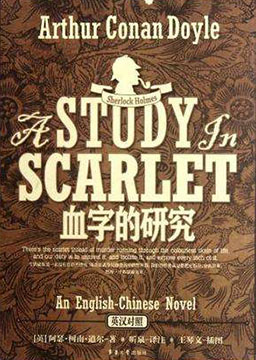

《福尔摩斯: 血字的研究》中英双语阅读

福尔摩斯: 血字的研究 (A Study In Scarlet)
作者：阿瑟·柯南·道尔 (Arthur Conan Doyle) [英国]
从阿富汗战场受伤退役的华生医生，和一个刚从医学院毕业的年轻人合租了伦敦贝克街221号乙的一套公寓。很快，他发现这位名叫歇洛克·福尔摩斯的年轻人具有超越常人的缜密观察力和非凡的推理分析能力，同时，时常有一些神秘的访客出入他们的寓所。直到有一天，他们卷入了一起谋杀案……福尔摩斯牛刀初试第一案，精彩纷呈！
难度：
大学
长度：
中篇
分类：
悬疑
第一章: 歇洛克·福尔摩斯先生 Mr. Sherlock Holmes
第二章: 演绎法 The Science Of Deduction
第三章: 劳瑞斯顿花园街的惨案 The Lauriston Gardens Mystery
第四章: 警察栾斯的叙述 What John Rance Had To Tell
第五章: 广告引来了不速之客 Our Advertisement Brings A Visitor
第六章: 特白厄斯·葛莱森大显身手 Tobias Gregson Shows What He Can Do
第七章: 一线光明 Light In The Darkness
第八章: 沙漠中的旅客 On The Great Alkali Plain
第九章: 犹他之花 The Flower Of Utah
第十章: 约翰·费瑞厄和先知的会谈 John Ferrier Talks With The Prophet
第十一章: 逃命 Flight For Life
第十二章: 复仇天使 The Avenging Angels
第十三章: 再录华生回忆录 A Continuation Of The Reminiscences Of John Watson
第十四章: 尾声 The Conclusion